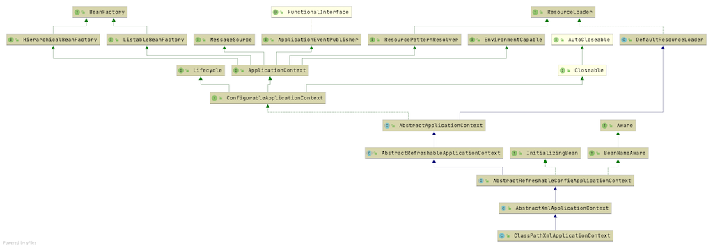
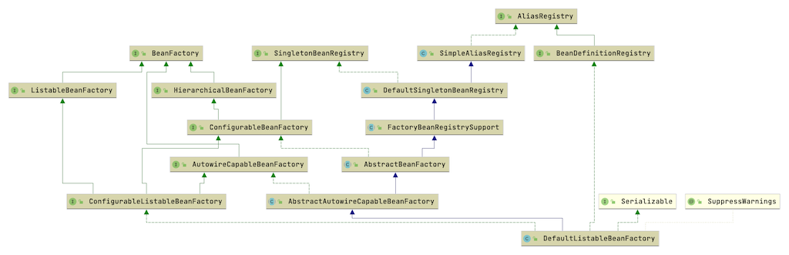

Spring Framework v5.2.5.RELEASE
Table of Contents
1 IoC
1.1 IoC 核心接口和类
Spring 的 IoC 容器对象一般继承自 ApplicationContext 接口，常见的对象类如下
ClassPathXmlApplicationContext: 读取 ClassPath 中 XML 配置文件的 Bean 定义
的容器

AnnotationConfigApplicationContext: 读取注解 Bean 定义的容器

常见的类简单可以分成以下几类
- 资源处理
ResourceSpring 中关于资源的定义ResourceLoader提供资源加载方法BeanDefinitionReader读取接口主要用来读取信息
- 注册形式，在 Spring 中关于注册的几个核心
AliasRegistry别名注册BeanDefinitionRegistryBean 定义注册SingletonBeanRegistry单例 Bean 注册DefaultSingletonBeanRegistry
- 生命周期，可以分成容器生命周期和 Bean 生命周期两个小类
Lifecycle容器生命周期的核心接口InitializingBean,DisposableBean等 Bean 的生命周期接口
- Bean 拓展
BeanPostProcessorAware系列接口
- 上下文的接口:
ApplicationContext作为主导接口AbstractApplicationContext
1.2 IoC 资源读取及注册
1.2.1 XML 文档验证
XML 文档验证常见有如下两种方式
- DTD (Document Type Definition) 验证
- XSD (XML Schema Definition) 验证
XML 文档读取实现位于 XmlBeanDefinitionReader 类中实现，该类中的实现了对上
述两种格式 XML 文档的读取
/** * Indicates that the validation should be disabled. */ public static final int VALIDATION_NONE = XmlValidationModeDetector.VALIDATION_NONE; /** * Indicates that the validation mode should be detected automatically. */ public static final int VALIDATION_AUTO = XmlValidationModeDetector.VALIDATION_AUTO; /** * Indicates that DTD validation should be used. */ public static final int VALIDATION_DTD = XmlValidationModeDetector.VALIDATION_DTD; /** * Indicates that XSD validation should be used. */ public static final int VALIDATION_XSD = XmlValidationModeDetector.VALIDATION_XSD;
1.2.2 XML 文档读取
读取 XML 文件核心方法 loadBeanDefinitions(...) 实现如下
/** * Load bean definitions from the specified XML file. * @param encodedResource the resource descriptor for the XML file, * allowing to specify an encoding to use for parsing the file * @return the number of bean definitions found * @throws BeanDefinitionStoreException in case of loading or parsing errors */ public int loadBeanDefinitions(EncodedResource encodedResource) throws BeanDefinitionStoreException { Assert.notNull(encodedResource, "EncodedResource must not be null"); if (logger.isTraceEnabled()) { logger.trace("Loading XML bean definitions from " + encodedResource); } Set<EncodedResource> currentResources = this.resourcesCurrentlyBeingLoaded.get(); if (currentResources == null) { currentResources = new HashSet<>(4); this.resourcesCurrentlyBeingLoaded.set(currentResources); } if (!currentResources.add(encodedResource)) { throw new BeanDefinitionStoreException( "Detected cyclic loading of " + encodedResource + " - check your import definitions!"); } try (InputStream inputStream = encodedResource.getResource().getInputStream()) { InputSource inputSource = new InputSource(inputStream); if (encodedResource.getEncoding() != null) { inputSource.setEncoding(encodedResource.getEncoding()); } return doLoadBeanDefinitions(inputSource, encodedResource.getResource()); } catch (IOException ex) { throw new BeanDefinitionStoreException( "IOException parsing XML document from " + encodedResource.getResource(), ex); } finally { currentResources.remove(encodedResource); if (currentResources.isEmpty()) { this.resourcesCurrentlyBeingLoaded.remove(); } } }
其中的 doLoadBeanDefinitions(...) 方法具体实现加载 BeanDefinition
doLoadDocument()加载文档，这部分将 XML 作为资源读取registerBeanDefinitions()注册BeanDefinition- 其中
DefaultBeanDefinitionDocumentReader中的registerBeanDefinitions()方法实现了注册BeanDefinition
- 其中
/** * Actually load bean definitions from the specified XML file. * @param inputSource the SAX InputSource to read from * @param resource the resource descriptor for the XML file * @return the number of bean definitions found * @throws BeanDefinitionStoreException in case of loading or parsing errors * @see #doLoadDocument * @see #registerBeanDefinitions */ protected int doLoadBeanDefinitions(InputSource inputSource, Resource resource) throws BeanDefinitionStoreException { try { Document doc = doLoadDocument(inputSource, resource); int count = registerBeanDefinitions(doc, resource); if (logger.isDebugEnabled()) { logger.debug("Loaded " + count + " bean definitions from " + resource); } return count; } catch (BeanDefinitionStoreException ex) { throw ex; } catch (SAXParseException ex) { throw new XmlBeanDefinitionStoreException(resource.getDescription(), "Line " + ex.getLineNumber() + " in XML document from " + resource + " is invalid", ex); } catch (SAXException ex) { throw new XmlBeanDefinitionStoreException(resource.getDescription(), "XML document from " + resource + " is invalid", ex); } catch (ParserConfigurationException ex) { throw new BeanDefinitionStoreException(resource.getDescription(), "Parser configuration exception parsing XML from " + resource, ex); } catch (IOException ex) { throw new BeanDefinitionStoreException(resource.getDescription(), "IOException parsing XML document from " + resource, ex); } catch (Throwable ex) { throw new BeanDefinitionStoreException(resource.getDescription(), "Unexpected exception parsing XML document from " + resource, ex); } }
public void registerBeanDefinitions(Document doc, XmlReaderContext readerContext) { this.readerContext = readerContext; doRegisterBeanDefinitions(doc.getDocumentElement()); }
DefaultBeanDefinitionDocumentReader 实现
protected void doRegisterBeanDefinitions(Element root)读取 XML 的<bean>标签中的信息<?xml version="1.0" encoding="UTF-8"?> <beans xmlns="http://www.springframework.org/schema/beans" xmlns:xsi="http://www.w3.org/2001/XMLSchema-instance" xsi:schemaLocation="http://www.springframework.org/schema/beans http://www.springframework.org/schema/beans/spring-beans.xsd"> <bean id="author" class="io.github.jeanhwea.bean.Author"> <property name="name" value="Martin Flower"/> </bean> </beans>
至此 XML 格式的 BeanDefinition 注册完成
1.2.3 XML 标签解析
标签解析的细节比较多，这里跳过
- beans 标签的解析
- id
- name
- class
- parent
- scope
- abstract
- lazy-init
- autowire
- depends-on
- autowire-candidate
- init-method
- destroy-method
- factory-method
- factory-bean
- import 标签的解析
- alias 标签的解析
2 BeanFactory
2.1 DefaultListableBeanFactory
XmlBeanFactory 继承自 DefaultListableBeanFactory, 并且 DefaultListableBeanFactory 实现了大部分的 Spring 注册及加载的实现

该类定了 BeanDefinition 类的 Map
/** Map of bean definition objects, keyed by bean name. */ private final Map<String, BeanDefinition> beanDefinitionMap = new ConcurrentHashMap<>(256); /** Map of singleton and non-singleton bean names, keyed by dependency type. */ private final Map<Class<?>, String[]> allBeanNamesByType = new ConcurrentHashMap<>(64); /** Map of singleton-only bean names, keyed by dependency type. */ private final Map<Class<?>, String[]> singletonBeanNamesByType = new ConcurrentHashMap<>(64); /** List of bean definition names, in registration order. */ private volatile List<String> beanDefinitionNames = new ArrayList<>(256);
2.2 XmlBeanDefinitionReader
实际实现读取 BeanDefinition 的方法
/** * Actually load bean definitions from the specified XML file. * @param inputSource the SAX InputSource to read from * @param resource the resource descriptor for the XML file * @return the number of bean definitions found * @throws BeanDefinitionStoreException in case of loading or parsing errors * @see #doLoadDocument * @see #registerBeanDefinitions */ protected int doLoadBeanDefinitions(InputSource inputSource, Resource resource) throws BeanDefinitionStoreException { try { Document doc = doLoadDocument(inputSource, resource); int count = registerBeanDefinitions(doc, resource); if (logger.isDebugEnabled()) { logger.debug("Loaded " + count + " bean definitions from " + resource); } return count; } catch (BeanDefinitionStoreException ex) { throw ex; } catch (SAXParseException ex) { throw new XmlBeanDefinitionStoreException(resource.getDescription(), "Line " + ex.getLineNumber() + " in XML document from " + resource + " is invalid", ex); } catch (SAXException ex) { throw new XmlBeanDefinitionStoreException(resource.getDescription(), "XML document from " + resource + " is invalid", ex); } catch (ParserConfigurationException ex) { throw new BeanDefinitionStoreException(resource.getDescription(), "Parser configuration exception parsing XML from " + resource, ex); } catch (IOException ex) { throw new BeanDefinitionStoreException(resource.getDescription(), "IOException parsing XML document from " + resource, ex); } catch (Throwable ex) { throw new BeanDefinitionStoreException(resource.getDescription(), "Unexpected exception parsing XML document from " + resource, ex); } }
3 ApplicationContext
4 AOP
使用动态代理实现
- JDK 代理
- cglib 代理
5 Spring 核心类梳理
- ApplicationContext
- AbstractApplicationContext
refresh()实现 Spring Bean 加载的核心逻辑
- AbstractApplicationContext
- BeanDefinition
- AbstractBeanDefinition
- BeanDefinitionReader
- 读取 BeanDefinition 对象
- BeanFactory
- Bean 工厂类
- AbstractBeanFactory
doGetBean(...)
- BeanFactoryPostProcessor
- 函数式接口
@FunctionalInterface
- 函数式接口
- BeanPostProcessor
- 提供自定义 Bean 实例化的处理接口扩展
postProcessBeforeInitialization(Object bean, String beanName)- Bean 实例化前置处理方法
postProcessAfterInitialization(Object bean, String beanName)- Bean 实例化后置处理方法